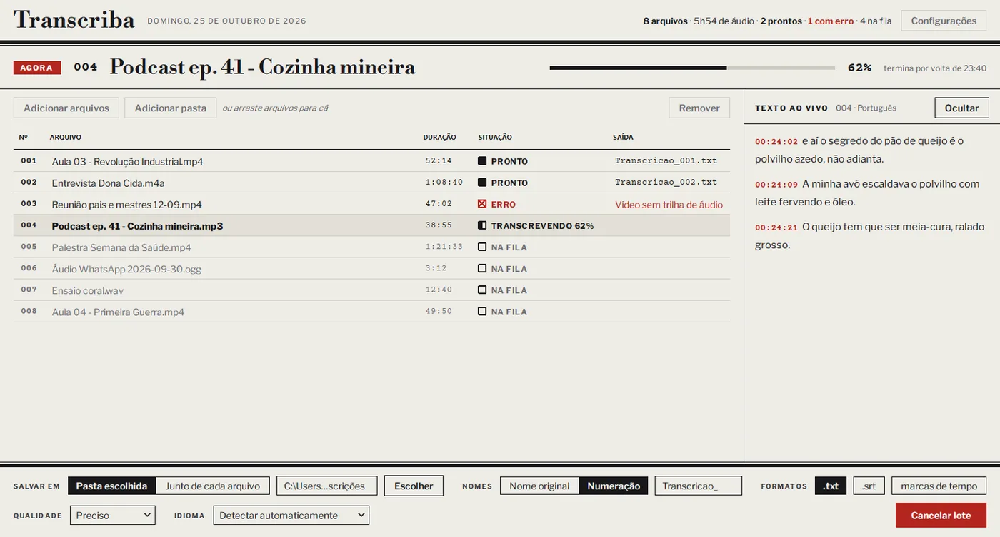

Transcriba
Transcrição no seu computador · grátis · sem limiteEntrevistas de pesquisa, aulas e reuniões: escolha dezenas de arquivos, clique em Transcrever e volte para encontrar os textos prontos. Sem conta, sem assinatura, sem limite de minutos.
Baixar o TranscribaVersão portátil · 183 MB · não precisa instalarPrefere instalar com atalho no menu Iniciar? Baixe o instalador (126 MB).
Windows 10 ou 11, 64 bits · placa NVIDIA opcional (deixa bem mais rápido)

A fila de arquivos, o que está sendo transcrito agora e o texto aparecendo ao vivo.
Tudo acontece no seu computador. Suas gravações e os textos não são enviados a ninguém.
Uma pasta inteira de uma vez. Ele avisa quando termina e não deixa o computador dormir no meio.
Texto corrido (.txt), legendas (.srt) ou texto com marcas de tempo. MP3, MP4, M4A, WAV, OGG do WhatsApp e outros.